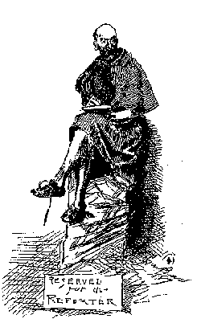

|  | As a fantasy of time travel, Connecticut Yankee may be MT's most imaginatively original book. At the same time, as his sendup of the Camelot legend and an attempt to re-present Europe's feudal history, it is probably the most derived of his novels, the one most dependent on other books. Anticipating British criticism of his anti-romantic depiction of the Middle Ages, MT considered adding an appendix that would supply documentation for specific episodes in the novel, and toward that end he went through the manuscript identifying specific works as sources for Hank's various descriptions of and pronouncements about the life in the sixth century. This section of the archive makes no claim to be that thorough. Instead, below is simply a carefully chosen sampling of the various texts that served MT as inspirations, provocations or guidebooks. The design is to represent the range of material on which his imagination fed, and to suggest how, although his "Yankee" goes east to an aristocratic and slave-owning culture, in some respects MT was also using Old World past as a scene on which to stage his own ambivalent feelings about the South in which his own past took place. |